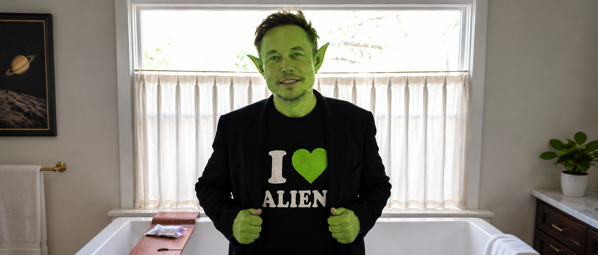
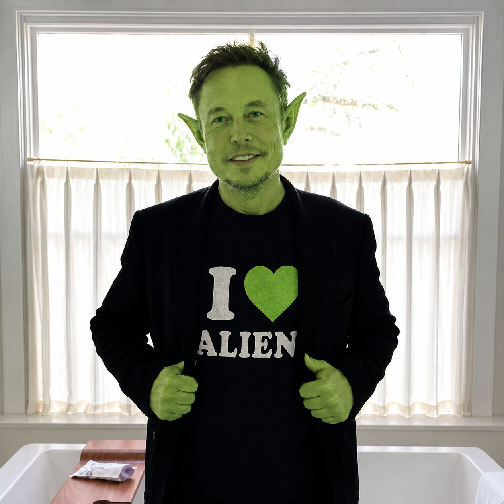

SpaceX
Return vehicle. The route back home was being tested launch by launch.


CLASSIFIED TOKEN
$ILON9 is the meme of the alien founder trying to get back home. The chain is the broadcast layer. The community is the ground crew. The ticker is the beacon.
RETURN PROTOCOL
Return vehicle. The route back home was being tested launch by launch.
Alien translator. Human thoughts converted into galactic format.
Mothership signal. A global broadcast tower hiding in plain sight.
Onboard AI. The ship computer woke up before the ship arrived.
PUBLIC EVIDENCE
The meme is not complicated. Build the ship. Build the signal. Build the translator. Build the AI. Then wait for humans to finally decode it.
SOURCE SIGNAL
I keep telling people I’m an alien, but nobody believes me 😂
— Elon Musk (@elonmusk) October 11, 2024